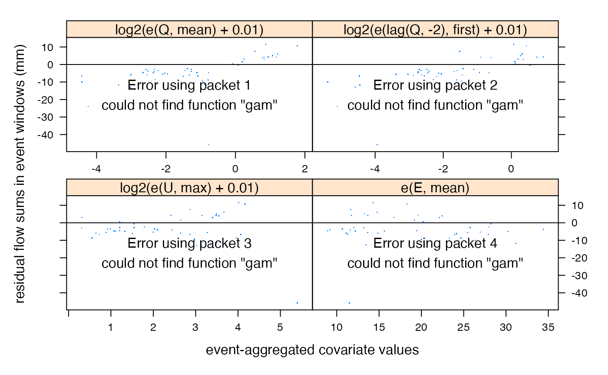

Visualise systematic model errors against covariates
Source:R/event.xyplot.hydromad.R
event.xyplot.hydromad.RdVisualise systematic model errors against covariates.
# S3 method for hydromad event.xyplot( x, events, formula = ~log2(e(Q, mean) + 0.01) + log2(e(lag(Q, -2), first) + 0.01) + log2(e(U, max) + 0.01) + e(E, mean), extract = residuals, with.U = TRUE, ..., panel = panel.superpose, panel.groups = panel.groups.funs, abline = list(h = 0), pch = ".", ylab = "residual flow sums in event windows (mm)", data = NULL ) # S3 method for hydromad.runlist event.xyplot( x, events, formula = ~log2(e(Q, mean) + 0.01) + log2(e(lag(Q, -2), first) + 0.01) + log2(e(U, max) + 0.01) + e(E, mean), extract = residuals, with.U = TRUE, ..., panel = panel.superpose, panel.groups = panel.groups.funs, abline = list(h = 0), pch = ".", ylab = "residual flow sums in event windows (mm)", data = NULL )
Arguments
| x | a |
|---|---|
| events | event sequence produced by |
| formula | formula defining the covariates to plot, as passed to the
formula method of |
| extract | a function to apply to |
| with.U | to include modelled effective rainfall |
| ... | further arguments passed to |
| panel, panel.groups, abline, pch, ylab | passed to |
| data | ignored. |
Value
this function returns a trellis object which can be plotted.
See also
event.xyplot, xyplot,
eventapply
Author
Felix Andrews felix@nfrac.org
Examples
data(Cotter) x <- Cotter[1:1000, ] mod <- hydromad(x, sma = "scalar", routing = "armax", rfit = list("sriv", order = c(2, 1)) ) ev <- eventseq(x$P, thresh = 3, inthresh = 1, indur = 5) event.xyplot(mod, events = ev)#>foo <- event.xyplot(mod, events = ev, ~ sqrt(e(P, max)) + sqrt(e(rollmean(lag(P, -1), 20, align = "left"), first)) ) dimnames(foo)[[1]] <- c("sqrt. peak rain (mm/day)", "mean 20-day ante. rain") foo